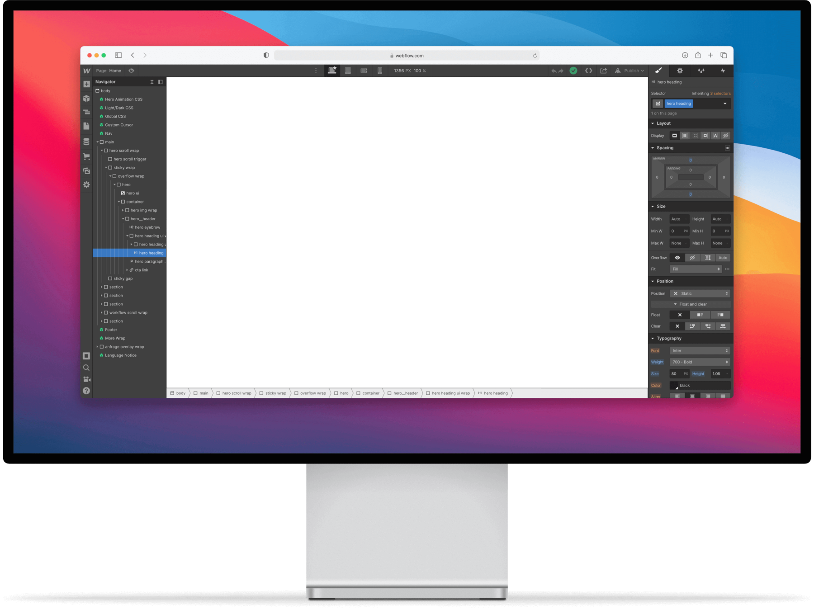

도전을 두려워하지 않고 새로운것을 배우는 사람
시간을 효율적으로 쓰는 경제적인 사람
1픽셀의 디테일을 아는 섬세한 감성의 사람
좋은 영향력을 주도하는 센스있는 사람
Your Perfect
Developer Partner.
Your Perfect
Developer Partner.
UI/UX에 대한 개념부터 웹 접근성, 깔끔한 구조의 코딩까지. 좋은 디자인이란 무엇인지에 대해서 끊임없이 고민하는 열정있는 신입 웹 디벨로퍼입니다. 항상 새로운것을 배우는데 흥미를 느끼고 식지않는 열정으로 재밌게 성장하고 있습니다.
Javascript
HTML
CSS
Passion
열정있게. 재미있게.
Javascript로
생동감있게.
손수만든 사이트.
REACT와 PHP .
포트폴리오를
즐겨주셔서 감사합니다.
제가 준비한 컨텐츠는 여기까지입니다.
보여주려고 한 작업들은 여기서 끝이지만
지금도, 앞으로도 계속 공부하며
보다 짜임새 있는 코딩과 뛰어난 디자인을
향해서 달려나갈 것입니다.
저의 작업물이 마음에 드셨다면 언제든지!
메일과 전화 심지어 Instagram까지.
어떤 방식으로든 연락해주시면 감사하겠습니다.
자바스크립트 를 처음 배우며
기본적인 문법과 작동원리를 익히고
다양한 예제들을 통해서 기초를 탄탄하게
익혔습니다. 자기만의 레퍼런스를 만들어
필요할 때 언제든 참고할 수 있도록
정리하였습니다. 자바스크립트는
저에게 요리처럼 다가왔습니다. 하나의
요리에도 다양한 조리법이 있듯이
코딩도 다양한 코딩방법이 있는게 즐겁습니다.
다양한 자바스크립트 예제.
지금 시작합니다.
자바스크립트 뿐만아니라
HTML, CSS 의 기본을 정리한
레퍼런스입니다. HTML, CSS에 스크립트를
더해서 효율적으로정보 활용을
가능하게 작업했습니다.
재미있게 말이죠.
사이트의 구조를 잡는 Flex와
Grid시스템에 대한 레퍼런스도
정리하여 필요할 때 참고할 수 있도록
했습니다.자주 안쓰지만 필요한 기능을
언제든 쉽게 볼 수 있습니다.
아주 유용하게요.
자바스크립트를 이용한 이미지 슬라이드
예제입니다. 기본적인 움직임에서
벗어나 이전, 다음 버튼 추가.
닷 버튼 추가, 상하 움직임,
그리고 끊어지지 않는 연속 움직임을
구현하였습니다.
자바스크립트를 이용한 이미지 슬라이드
예제입니다. 기본적인 움직임에서
벗어나 이전, 다음 버튼 추가.
닷 버튼 추가, 상하 움직임,
그리고 끊어지지 않는 연속 움직임을
구현하였습니다.
마우스를 움직이는 위치에 따라
효과를 주는마우스 이펙트기능을
구현했습니다. 텍스트가 움직이는 효과,
이미지가 변하는 효과 등 다양한 기능들.
화려한 웹 페이지위한
첫 걸음의 시작.
재밌는 자바스크립트.
간단하게 즐기는
흥미진진한 게임.
재밌는 자바스크립트.
간단하게 즐기는
흥미진진한 게임.
공부가 어렵고 지칠 때.
재미있는 게임 만들기로 기분전환.
처음은 어려웠어도 만들다 보니 흥미롭게
집중하며 만든 게임들입니다.
카드 맞추기, 테트리스, 타자게임을
구현했습니다.
EFFECT.
서치와 퀴즈.
검색기능과 퀴즈풀기.
다양한 메서드를 활용해서 만들어 본
검색 기능 이펙트 입니다.
CSS 레퍼런스를 대상으로 특정 조건을
선택하거나 원하는 검색어를 입력해서
정보를 찾는 기능들을 구현했습니다.
퀴즈 이펙트는 문제를 풀며
주관식으로 정답을 입력하거나
객관식으로 맞는 보기를 클릭하면
결과에 따라 알려주는 이펙트 기능입니다.
이전에 정리해 놓은 자바스크립트,
HTML, CSS 레퍼런스를 기반으로
문제를 만들었으며, 밋밋할 수 있는
디자인에 강아지 이펙트를 추가해서
재미있는 퀴즈는 물론, 귀여운 디자인까지
구현했습니다.
차근차근 배우면서 만들어보는 사이트는
재미는 물론, 실력까지 늘어납니다.
REACT, PHP, TEAM PROJECT를
만들어보며 코딩 뿐만아니라
사이트의 구조까지 공부할 수 있었습니다.
REACT사이트는 간단한 소개 사이트 형식으로
만들어져있으며, API를 활용한 검색 기능
들을 구현했습니다. 또한
작업을 하며 컴포넌트와 API의
개념을 이해할 수 있었습니다.
다채로운
PHP사이트.
기본적인 PHP 사이트로, 로그인과 회원가입,
그리고 게시글 작성과 댓글 기능을
구현했습니다. 페이지네이션기능을
만들 때 PHP의 작동 방식을 자연스럽게
이해할 수 있게 되었습니다. 또한
자바스크립트를 배우며 익힌 퀴즈 풀기,
이미지 슬라이드를 추가하여
평범해보일 수 있는 사이트에 다채로운
멋을 추가하였습니다.
PHP를 활용해서 만든 Team Project
Charger Find입니다. 전기차
충전소의 위치 정보를 안내하는 사이트로,
전기차와 관련된 뉴스와 커뮤니티를
이용할 수 있는 기능을 구현했습니다.
Charger Find프로젝트를 진행하면서
협업하는 법을 알아갔습니다.